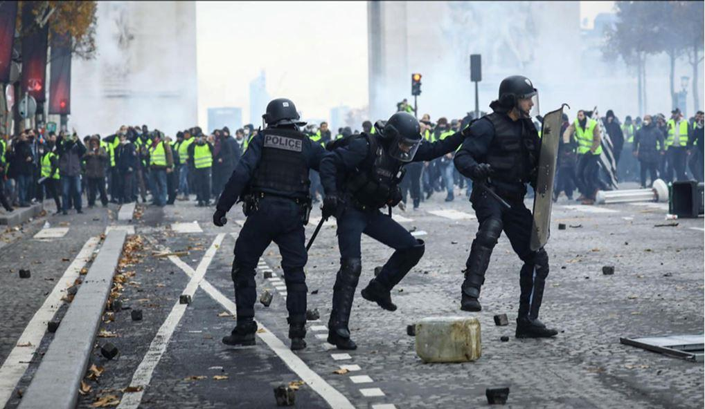
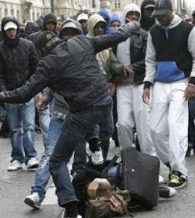
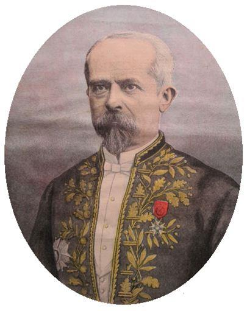
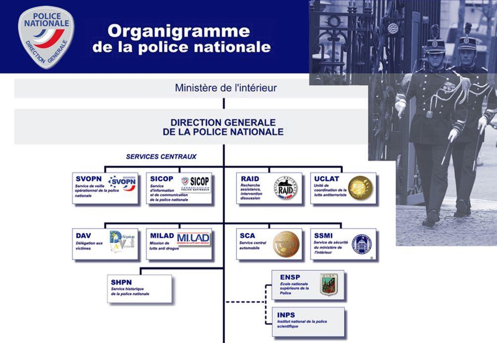
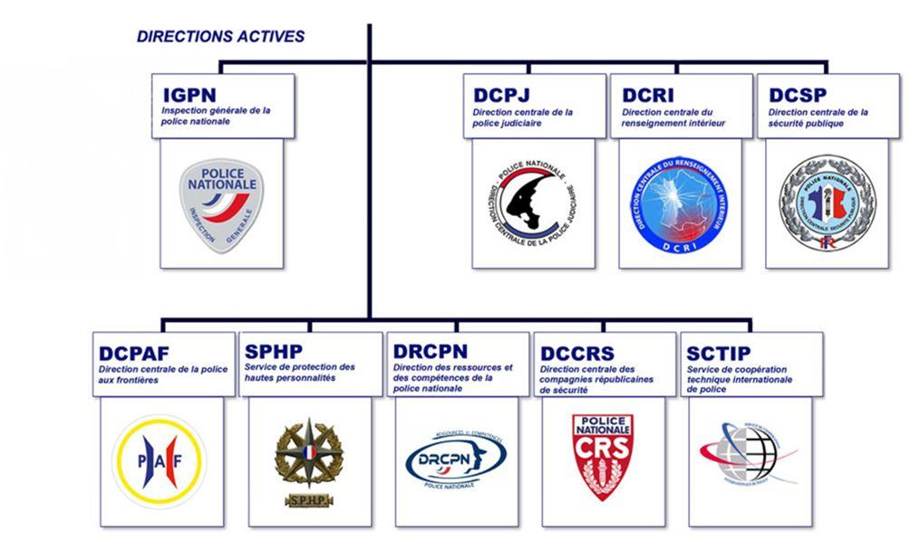
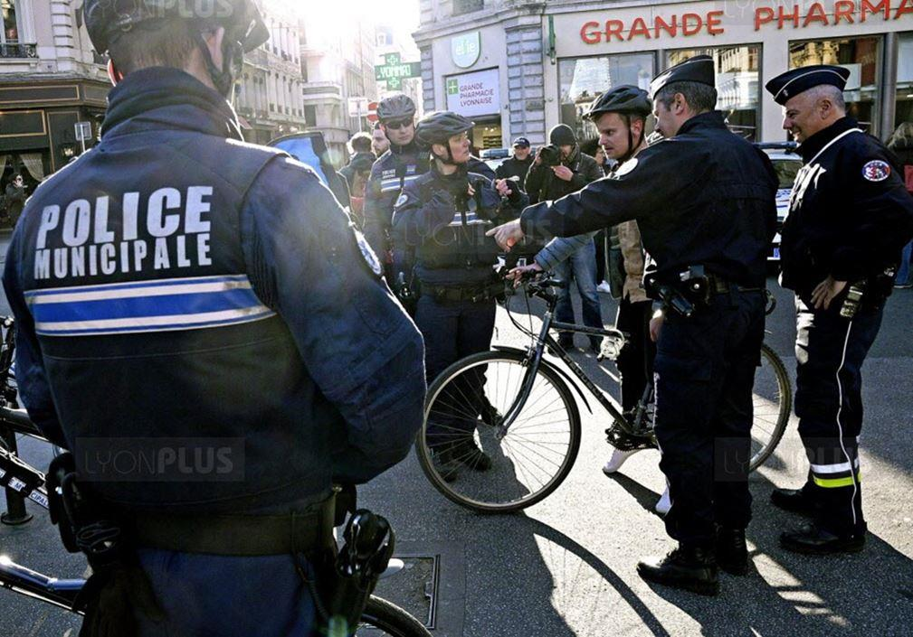

Quels enjeux sécuritaires pour la France de demain
par Olivier DAMIEN
De tout temps l'évolution des formes de la criminalité a nécessité une adaptation des systèmes sécuritaires des États qui y étaient confrontés. La France n'y a pas échappé. Son histoire regorge en effet de périodes plus ou moins troubles, plus ou moins dangereuses, au cours desquelles les responsables politiques ont dû réagir, parfois dans l'urgence. L'actualité récente ne déroge pas à la règle. Montée de la violence, développement de la criminalité organisée, ancrage d'une délinquance toujours plus sophistiquée, installation durable du terrorisme etc., les défis à relever sont aujourd'hui de plus en plus nombreux et de plus en plus graves. Face aux menaces protéiformes et complexes qui menacent jusqu'à l'intégrité même de la Nation comment la France du XXIème siècle doit-elle repenser et organiser son système sécuritaire ?
En France, l'organisation de la police (entendu au sens le plus large qui soit) et de la justice est encore largement marquée par la vision traditionnelle que l'on a de l'insécurité. Adaptée au banditisme issu de l'après-guerre et aux besoins de l'ordre public de la fin des années 60, les réformes entreprises n'ont jamais permis de s'adapter réellement aux enjeux qu'un monde en pleine mutation devait proposer. Certes de nombreuses réformes des services de sécurité ou de la justice ont été opérées au cours des dernières décennies mais aucune n'a permis de franchir le pas qualitatif qui aurait abouti à des administrations efficaces et opératives. Bien souvent au contraire, sous diverses influences, les capacités opérationnelles de ces entités ont été entravées par un alourdissement inconsidéré des modes de fonctionnement et des procédures. Le constat est donc aujourd'hui sans appel, nos services de sécurité et la justice qui en constitue le prolongement naturel, sont disqualifiés et dans l'incapacité de faire face aux attaques qui nous assaillent de toute part. Pourtant, il est urgent de reprendre la main. Face à une situation sans précédent dans l'histoire de notre pays, il convient de prendre d'urgence les mesures qui seules pourront préserver la paix publique et sauvegarder notre démocratie.
Au cours de ces dernières décennies, les réformes qui ont touché police et justice étaient le plus souvent guidées par des considérations électoralistes. A tel évènement, il convenait de réagir en réalisant telle ou telle modifications de nos institutions. Par ailleurs, le clivage droite gauche dans les domaines de la sécurité et de la justice n'a fait qu'ajouter à la confusion et rendre finalement illisible et irréalisable toute réforme en profondeur. Il aurait fallu pour cela un consensus national qui n'a jamais trouvé à s'exprimer. Ce clivage est toujours bien présent. D'une élection à l'autre il est de bon ton de défaire ce que le gouvernement précédent a mis en place ce qui permet au crime et au terrorisme de prospérer sur un terrain où les responsables politiques sont incapables de s'accorder.
De fait, les dernières décennies, et en particulier la toute dernière, ont fait émerger de nouvelles problématiques en matière de sécurité intérieure. De la ghettoïsation de nombreux quartiers de nos villes, source d’une criminalité de plus en plus organisée et violente, à l’arrivée sur notre territoire d’une nouvelle forme de terrorisme particulièrement meurtrier, en passant par la gestion de manifestations de voie publique, qui s’apparentent de plus en plus souvent à des émeutes, notre pays est incontestablement à un tournant sécuritaire décisif de son histoire.
D’un strict point de vue opérationnel, trois thématiques ou enjeux majeurs importants s’avèrent d’actualité et en attente de réponses concrètes et efficaces. D’une part, la lutte contre l’insécurité du quotidien et la reconquête de nombreux quartiers. D’autre part, une nécessaire recomposition stratégique et tactique du maintien de l’ordre. Enfin, l’inscription dans le long terme de la lutte contre le terrorisme, et l’indispensable adaptation de nos services de sécurité.
Les nouveaux enjeux
1/ LA LUTTE CONTRE L’INSÉCURITÉ DU QUOTIDIEN ET LA RECONQUÊTE DES QUARTIERS
Depuis qu’au début des années 1980 les chiffres relatifs à la criminalité et à la délinquance sont devenus des enjeux politiques, il est extrêmement difficile de s’y fier. Toujours interprétés à charge ou à décharge. Souvent minimisés lorsqu’ils peuvent être gênants. Parfois manipulés à des fins qui n’ont rien de scientifiques, les statistiques policières n’ont, en réalité, jamais rien révélé d’autre que la nature de l’activité des services. En l’occurrence, leur capacité à enregistrer des plaintes et à élucider un certain nombre de faits délictuels ou criminels.
Cependant, ce dont certains travaux universitaires et des enquêtes indépendantes ont pu rendre compte au cours de ces dernières années, c’est de l’augmentation fulgurante de la délinquance de voie publique. Qualifiée de petite, voire moyenne, cette criminalité principalement constituée de cambriolages, de petits larcins dont les vols de véhicules et de vols avec violences sans atteintes physiques graves, est devenue une véritable plaie pour nos concitoyens. Difficile à combattre du fait de leur caractère diffus et factuel, ces infractions ne cessent d’augmenter au grand dam des services de police qui ne disposent ni des effectifs, ni des moyens indispensables qui leur permettraient d’obtenir des résultats tangibles et surtout pérennes.
Mais aujourd’hui, c’est essentiellement en direction de certains de nos quartiers urbains qu’il faut regarder. Évalués officiellement à 800 environ, mais sans doute plus nombreux. Répertoriés en 4 catégories qui vont de « zones de non-droit » à « quartiers sensibles-problématiques », certains d’entre-eux ne voient plus les forces de l’ordre y pénétrer d’initiative depuis longtemps. Tenus par des bandes dont les caïds appartiennent souvent à la même famille (cf. l’affaire Théo), ils voient se développer de nombreux trafics, dont celui de stupéfiants, et s’installer une criminalité qui devient endémique.
Ainsi, l’activité criminelle qui y sévit, s’impose comme une composante économique désormais incontournable. A simple titre d’exemple, le seul marché du cannabis en Seine Saint Denis, rapporterait près d’1 milliard d’euros, et « emploierait » près de 100.000 « salariés » (population active du département un peu plus de 600.000). Un secteur économique non négligeable à lui seul, et qui fait vivre de nombreuses familles. Face à l’ampleur du phénomène, les pouvoirs publics sont aujourd’hui dépassés. Et ce n’est pas la mise en place d’une « police de proximité » ou de « sécurité du quotidien », quel que soit son nom ou sa forme, qui résoudra un fléau durablement installé. Le seul enjeu qui vaille maintenant, est d’empêcher la propagation du mal. Et même cela s’avère extrêmement compliqué.
Mais si les réseaux criminels français sont les plus actifs sur le territoire national (rappelons qu’il n’y a pas de mafia au sens propre du terme en France) – ils représentent 80 % environ de la grande délinquance enregistrée -, les étrangers, en partie à cause d’une large ouverture de nos frontières, ne sont, pour autant, pas absents du paysage. Trafic d’êtres humains pour les Roumains, trafic d’armes pour les Albanais, trafic de drogues pour les Italiens, cambriolages pour les Géorgiens et prostitution pour les Bulgares, à chacun son domaine d’activités et ses spécialités. Là encore, les récents règlements de comptes survenus à Marseille au cours de ces dernières années dans le cadre de la guerre que se livrent les gangs, avaient mis en évidence la présence de malfaiteurs en provenance directe de pays d’Europe centrale et orientale. Notamment des Kosovars.
Toutefois, il convient de souligner que l’efficacité des services de police (et de gendarmerie) dans la lutte contre le grand banditisme est relativement bonne. Les taux d’élucidations y dépassent souvent les 60 %, et même plus de 80 % en ce qui concerne les homicides ou les vols avec violences graves. Malheureusement, tel n’est pas le cas pour la petite délinquance, dont les taux de résolution sont souvent très au-dessous de 10 %.
Mais la lutte contre le crime et l’insécurité n’est qu’un des aspects du travail des policiers. L’actualité n’a, en effet, pas manqué de mettre en évidence une autre mission fondamentale des forces de l’ordre en général et de la police nationale en particulier. Il s’agit du maintien de l’ordre.
2/ LA NÉCESSAIRE RECOMPOSITION DU MAINTIEN DE L’ORDRE
La gestion des mouvements sociaux du point de vue de l’ordre public est une des prérogatives de l’État. Mais cet exercice qui consiste à prévenir les troubles et les désordres tout en faisant droit à cette liberté fondamentale qu’est celle de manifester, n’est pas sans poser de vraies questions et de réels problèmes.
Les manifestations que connaît notre pays depuis plusieurs mois à un rythme élevé et parfois d’une rare violence, sont caractéristiques de cette mutation qui s’est peu à peu opérée entre une vision classique du droit de manifester, largement porté au cours des dernières décennies par les syndicats, et cette nouvelle approche des manifestations de rues qui n’ont d’autre objectif que de poser des rapports de force afin d’obtenir par la violence ce qu’on ne peut plus obtenir par le dialogue. A cet égard, nombreux sont les intellectuels, les économistes et même certaines personnalités politiques à penser que les 20 ans à venir vont être marqués par les conflits internes des sociétés elles-mêmes, car le système actuel est épuisé.
Notre pays est traditionnellement un pays où les manifestations sont nombreuses. Ainsi, Paris à elle seule connaît plusieurs milliers de manifestations chaque année (entre 2 à 3000). Importantes ou moins importantes, c’est à dire rassemblant de quelques dizaines à plusieurs dizaines de milliers de personnes, elles sont gérées, la plupart du temps, sans difficultés notables.
Ainsi, l’organisation du maintien de l’ordre en France a hérité de ce long passé de contestation. Au fil du temps, l’ordre public autrefois dévolu à la troupe, avec tous les excès que l’on a pu connaître, est devenue la spécialité de formations particulièrement entraînées pour cela. Il en est ainsi des Compagnies républicaines de sécurité, créées en décembre 1944 et, bien entendu, des gendarmes mobiles (on ne dit plus gardes mobiles), forces spécialisées en la matière relevant de la gendarmerie nationale. Et cette longue expérience ainsi que ces savoir-faire irremplaçables ont été largement exportés au profit de pays qui désiraient également laisser libre cours à l’expression démocratique.
Au départ conçues et théorisées par le préfet Louis Lépine à la fin du XIXème siècle pour encadrer et contenir les manifestants, souvent avec l’aide de services d’ordre internes aux organisations syndicales, les techniques de maintien de l’ordre ont dû s’adapter, notamment pour éviter tout contact physique direct entre forces de l’ordre et manifestants. En effet, les quelques heurts qui sévissaient immanquablement lors de la dislocation des manifestations, prouvaient, si besoin en était, que moins il y avait de contacts, moins les risques de violences étaient importants.
C’est en se basant sur cette philosophie, ainsi que sur quelques incidents plus ou moins graves néanmoins survenus, que les responsables de l’ordre public établirent les règles d’intervention ou doctrines d'emploi des forces de l’ordre. Et tout ceci fonctionna de façon plutôt satisfaisante, jusqu’à ce qu’apparaissent au cœur des manifestations des groupuscules radicalisés, d’extrême droite ou d’extrême gauche, désireux, non pas de manifester dans le respect des règles établies, mais plutôt d’en découdre avec policiers et gendarmes dans le seul but de déstabiliser l’État. Et il faut reconnaître que cela a plutôt bien marché.
Aujourd’hui, se pose donc la question de l’évolution des techniques de maintien de l’ordre mises en place jusqu’à présent. Face à des groupes mobiles, particulièrement violents et rompus à l’exercice, les forces de l’ordre n’ont d’autre choix que de revoir leurs façons d’opérer et d’intervenir. Ainsi, le renseignement, jusque-là purement informatif doit-il sans doute (re) prendre une tournure plus opérationnelle en vue d’écarter au plus vite, voire préventivement, les individus repérés comme dangereux. Il doit également permettre d’anticiper les manœuvres déstabilisatrices des groupuscules violents qui mettent parfois les policiers en difficulté voire en péril. La tactique qui prévalait jusque-là, et qui consistait à tenir les manifestants à distance doit également être revue, afin de permettre l’interpellation des meneurs, des casseurs et des éléments les plus virulents. Cela passe incontestablement par plus de mobilité et d’anticipation. Enfin, l’arsenal juridique existant doit être utilisé à plein, afin de permettre des condamnations sans complaisance et sans équivoque.
Vastes chantiers à venir donc, qui devront envisager de revoir une approche totale de la gestion des opérations de maintien de l’ordre qui, tout en continuant de préserver des droits acquis et inaliénables, devra s’efforcer de répondre sans faiblesse aux désordres causés de façon intolérable et inacceptable dans une démocratie.
Mais il est un autre domaine, sans doute plus proche des questions de défense qui sont habituellement les nôtres, mais qui n’en constitue pas moins de nos jours une problématique importante pour la sécurité intérieure. Il s’agit du terrorisme islamiste.
3/ LA LUTTE CONTRE LE TERRORISME ET LE RENSEIGNEMENT POLICIER
Notre pays, à toutes les époques, a été touché par le terrorisme. De l'assassinat du bon Roy Henri par Ravaillac en 1610 qui, selon certains historiens, pourrait avoir été commandité par une puissance étrangère, l’Espagne en l’occurrence, à celui, emblématique de la pénétration du radicalisme islamiste dans notre pays, de la préfecture de police qui a fait, il y a seulement quelques semaines, 4 morts parmi les forces de l’ordre, la France, ses institutions, ses représentants et même, désormais, ses simples citoyens, ont été et restent des cibles de choix pour une multitudes d'individus et de groupes d'obédiences diverses et variées. Longtemps d'origine irrédentiste avec les séparatistes corses, basques ou bretons. Souvent d'inspiration extrémiste avec des groupes tel Action directe ou Charles Martel, le terrorisme venu de l'étranger, et notamment du proche et du Moyen-Orient, n'a pas manqué également, au cours des dernières décennies de faire de très nombreuses victimes sur notre sol. Mais c'est récemment, que la France vient de découvrir un terrorisme dont l’origine est à rechercher dans les combats menés par des groupes islamistes radicalisés. Particulièrement meurtriers, ces attaques terroristes ont la spécificité d’être le plus souvent menées par des ressortissants nationaux. Souvent issus de la petite délinquance et ayant séjourné en prison pour la plupart d’entre eux, ceux qui se qualifient de djihadistes ont la particularité de pouvoir se fondre dans un décor qui est celui du quotidien des Français.
De gauche à droite : Abdelhamid Abaaoud, Salah Abdeslam, Mohamed Abrini et Foued Mohamed-Aggad. (FEDERAL POLICE / POLICE NATIONALE / AFP)
Les services de renseignement se sont tout d’abord trouvés particulièrement désemparés face à des criminels qu’ils n’avaient pas ciblés. Puis, rapidement, ils ont su s’adapter à cette nouvelle donne, parvenant à déjouer, ces dernières années, de nombreux projets d’attentats.
Mais ceux qui réussirent furent nombreux, trop nombreux. Et c’est toute une approche de la sécurité intérieure qu’il a fallu reconsidérer, là encore, souvent sous la pression des événements et dans la précipitation.
C’est ainsi qu’aux côtés de nos soldats de l’opération sentinelle, policiers et gendarmes ont revu leurs techniques d’interventions. Ils se sont adaptés à des situations qui leur étaient jusque-là étrangères afin de protéger une population elle-même traumatisée en découvrant combien elle était vulnérable.
En quelques années seulement, la France est donc passée d'une gestion débonnaire de la paix publique à la nécessité de mettre en œuvre une véritable politique de sécurité intérieure. Même si quelques adaptations en vue de répondre à ces nouveaux enjeux ont touché la police nationale, aucune ne l’a véritablement transformé, comme il l’aurait fallu.
Réformer la police nationale en profondeur, quelques pistes à suivre
REVOIR L’ORGANISATION HIÉRARCHIQUE
En premier lieu, il convient de s'interroger sur l'efficacité de la chaîne hiérarchique policière, car il faut bien admettre que la police nationale est, depuis fort longtemps, davantage administrée qu'elle n'est commandée. Modifiée en 1995, pour passer de cinq corps à trois, le temps est venu de parachever une réforme qui doit conduire l'institution policière à s'organiser désormais en deux corps seulement. A l'instar de la gendarmerie nationale, qui fonctionne de cette façon depuis des siècles dans d'excellentes conditions. Il est donc devenu nécessaire de réduire des échelons hiérarchiques encore trop nombreux, sources de retards importants dans la communication institutionnelle et opérationnelle, ainsi que de temps de réactions trop longs dans la conduite des missions. L'amélioration des niveaux de recrutements et de la qualité des formations initiales et continues des policiers militent indiscutablement en ce sens.

REPENSER LES MISSIONS
En second lieu, la police nationale doit reconsidérer l'ensemble de ses missions. En France, l'organisation de la police et de la justice, en dépit de quelques ajustements, est encore largement marquée par une vision traditionnelle de l'insécurité. Appropriée au banditisme et à la délinquance issus de l'après-guerre ainsi qu’aux besoins de l'ordre public des années 1960 - 1970, les restructurations entreprises n'ont jamais permis de s'adapter réellement aux enjeux qu'un monde en pleine mutation imposait. Certes de nombreuses réformes des services de sécurité ou de la justice ont été opérées au cours des dernières décennies (petites ou grandes on en compte plusieurs dizaines), mais faute du consensus politique qui aurait été indispensable, aucune n'a permis de franchir le pas qualitatif qui aurait abouti à l’édification d’institutions efficaces et adaptées aux défis sécuritaires actuels. Bien souvent au contraire, sous diverses influences, les capacités opérationnelles de ces entités ont été entravées par un alourdissement inconsidéré des modes de fonctionnement et des procédures qu’elles soient pénales ou administratives. Le constat est donc aujourd'hui sans appel, nos services de sécurité, et la justice qui en constitue le prolongement naturel, sont disqualifiés et dans l'incapacité de faire face pleinement aux menaces qui surgissent de toutes parts. C'est donc une vaste réflexion qui doit être ouverte sur les missions, les moyens, l'organisation et les personnels de la police nationale.

INTÉGRER PLEINEMENT LES POLICES MUNICIPALES
Si la lutte contre l'insécurité et la délinquance doit faire l'objet d'une coproduction sociétale - expression à la mode depuis quelques années -, il convient, en tout premier lieu, d'y associer les administrations et services dont c'est la mission première. Les événements récents vécus par les forces de l'ordre ont prouvé que les modes d'organisations actuels avaient atteint leurs limites. Policiers et gendarmes épuisés, militaires sur-sollicités, magistrats débordés, prisons surpeuplées, tout indique que le temps des réformes en profondeur est arrivé. C'est ainsi qu'à côté des indispensables modifications structurelles qui doivent toucher la police nationale, il grand temps de responsabiliser et d'intégrer de façon beaucoup plus importante les polices municipales dans le dispositif global de sécurité intérieure de notre pays. Aujourd'hui troisième force de police par le nombre de ses agents présents sur le terrain - dont certains ont payé de leur vie cette présence lors d'attentats terroristes -, les polices municipales représentent 21.000 agents environ réparties dans un peu moins de 4000 communes ou collectivités. Cependant, encore trop souvent cantonnées dans un rôle subalterne par rapport à la police et à la gendarmerie, l'évolution de l'insécurité rend désormais leur contribution à la lutte contre la délinquance et la criminalité encore plus indispensable. Pour cela diverses mesures doivent impérativement être adoptées.
Ainsi, sous l'autorité du maire, acteur central dans l'animation et la coordination des politiques de prévention de la délinquance, qui doit voir ses pouvoirs de police élargis pour mieux les adapter aux réalités de sa commune, notamment dans le domaine de la prévention situationnelle, les polices municipales devront être pleinement associées à la lutte contre la délinquance. C'est à elles qu'il appartient de devenir cette véritable police de proximité dont la nécessité se fait sentir.
Car ce sont bien les policiers municipaux qui sont les premiers acteurs de cette proximité réclamée par nos concitoyens. Intégrés dans un tissu social qu'ils connaissent parfaitement. Au fait des nombreux événements qui émaillent la vie de nos villes et de nos villages. Susceptibles d'intervenir à tout moment en appui des autres services communaux - ceux agissant dans le champ du social en particulier -, ils sont, de fait, les acteurs incontournables de cette police du quotidien si souvent demandée. Par ailleurs, les conventions qui lient actuellement polices municipales et police nationale, notoirement vides de contenus et peu opérationnelles, doivent être reformulées sur la base de ces nouvelles missions, et de qualifications judiciaires rénovées pour être adaptées à des modes de coopération plus efficients.

Conclusion
Au fur et à mesure que nos sociétés se développent, les risques en matière de sécurité se font de plus en plus nombreux, et touchent à des domaines de plus en plus variés. Corollaire de cette surexposition, la demande de protection de nos concitoyens est également de plus en plus forte et exigeante. Car si la sécurité doit être assurée pour tous, elle doit se réaliser dans le cadre protecteur des libertés individuelles. Cette apparente contradiction entre sécurité et liberté ne peut donc être surmontée que par une approche rigoureuse quant aux méthodes et aux moyens utilisés par les forces de l'ordre, et une organisation sans faille des systèmes et des procédures policières mises en place. Mais pour cela, il faut qu'au plus haut sommet de l’État, l'idéologie le cède au pragmatisme, et qu'un réel consensus s'opère sur les objectifs à atteindre ainsi que les moyens à mettre en œuvre. Jusqu'à présent, c'est ce qui a souvent fait cruellement défaut.
Partager cette page